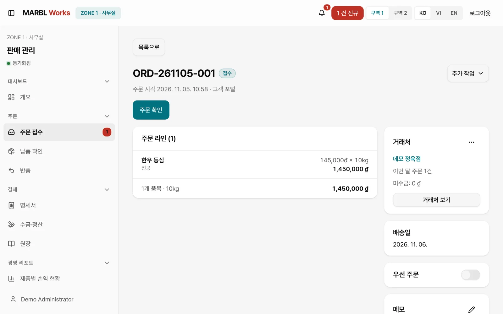
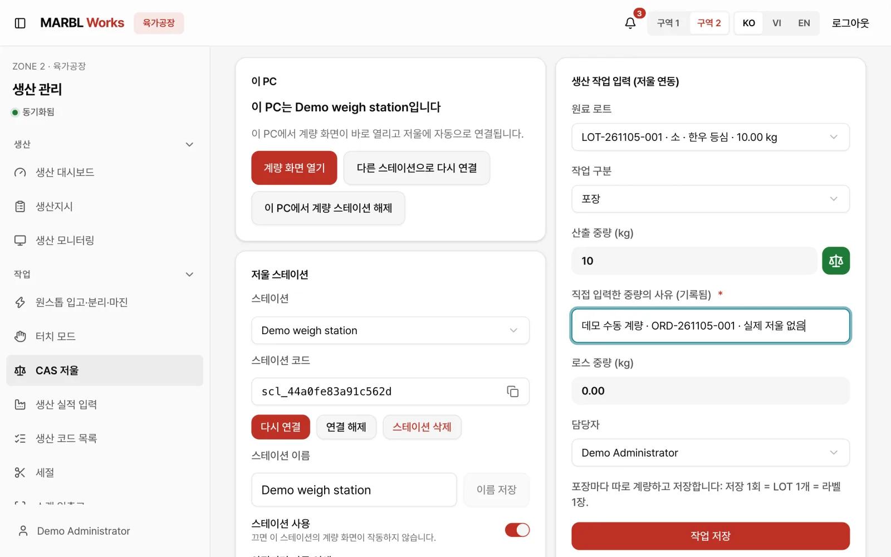
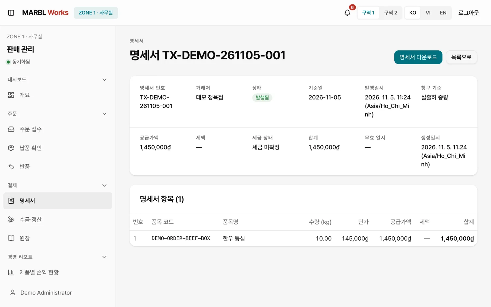

어떻게 만들었나
거래처의 주문에서 시작합니다
육가공 공장의 하루는 거래처의 주문에서 시작합니다. 식당과 정육점 같은 거래처는 휴대폰 주문앱에서 날짜, 제품과 수량, 확인의 세 단계로 주문을 넣고, 수량은 현장과 같은 kg 단위로 입력합니다.
주문앱은 한국어, 베트남어, 영어로 쓸 수 있고 홈 화면에 앱처럼 설치됩니다. 전화와 메신저로 흩어지던 주문이 처음부터 시스템 안의 한 건으로 들어옵니다.
사무실은 한 화면에서 받고 확정합니다
새 주문이 들어오면 판매·영업 관리 화면에 알림이 뜹니다. 사무실 직원은 주문 라인과 금액, 거래처와 희망 배송일을 확인해 확정하고, 확정된 주문은 창고 출하 요청으로 이어집니다.
주문은 접수, 준비중, 출하지시, 생산중, 출하완료, 배송중, 배송완료로 단계를 밟고, 누구든 지금 어느 단계인지 같은 화면에서 확인합니다.

현장은 계량대에서 기록합니다
생산 현장은 생산 관리 화면에서 주문의 부위와 가공, 포장과 예상 중량을 그대로 이어받은 생산지시를 봅니다. 이 화면은 현장 단말을 위한 키오스크 모드로도 열립니다.
계량대에서는 원료 LOT를 고르고 산출 중량과 담당자를 함께 저장한 뒤 라벨을 출력합니다. 원료 입고에서 절단, 포장까지 이어진 LOT의 경로는 kg 단위로 다시 추적할 수 있습니다.

출고와 정산까지 같은 주문으로
출고된 LOT는 납품서에 남고, 배송기사는 휴대폰의 기사 앱에서 배송과 납품 결과를 기록합니다. 사무실은 같은 주문의 수량과 금액으로 거래명세서를 발행하고 장부와 세금 화면에서 이어서 정리합니다.
거래처도 주문앱에서 자기 주문이 어디까지 왔는지 확인합니다. 주문 하나가 공장의 모든 다음 작업과 정산까지 끊기지 않고 이어지는 것이 이 시스템의 핵심입니다.
